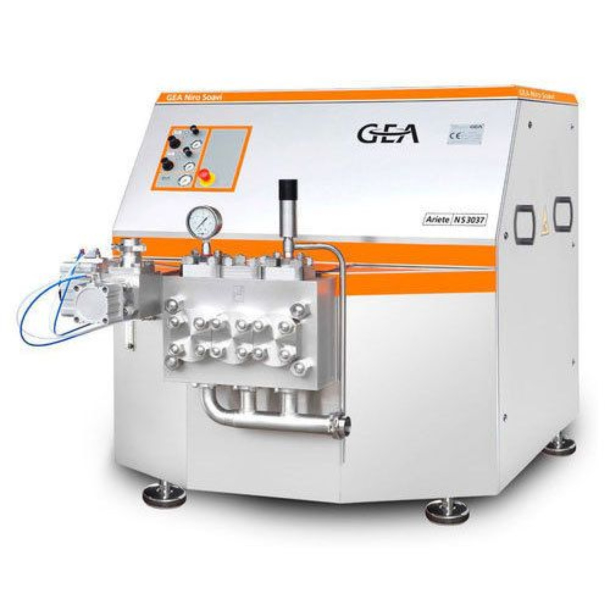

Homogenizer
A high-pressure dairy machine that forces milk through a precision homogenizing device to disrupt fat globules, reduce creaming and improve the physical stability, appearance and mouthfeel of dairy products.

What is homogenization?
The core objective is to stabilize the milk fat emulsion against gravity separation.
Milk is an oil-in-water emulsion. Homogenization mechanically disrupts the original fat globules by forcing milk through a small passage at high velocity. The Tetra Pak Dairy Processing Handbook describes the resulting fat globules as approximately 1 µm in diameter and notes a roughly four- to six-fold increase in fat/plasma interfacial surface area. Proteins from the plasma phase, especially casein, become associated with the newly created fat surface.
Why does it prevent cream separation?
Smaller fat globules rise much more slowly. Reducing particle size therefore reduces the creaming rate and keeps the fat phase dispersed.
Major components
The machine combines a reciprocating high-pressure pump with a precision homogenizing device.
Main drive & transmission
A powerful electric motor drives the crank mechanism through V-belt transmission. Rotary motor motion is converted into reciprocating piston motion.
High-pressure pump
Product enters the pump block and is pressurised by pistons running in a high-pressure block. Double piston seals are used; cooling water may be supplied between seals.
Homogenizing device
The critical device contains the forcer, impact ring, seat and hydraulic actuator. The controlled gap creates the intense velocity and pressure conditions.
Pressure indication
Homogenization pressure is monitored at the high-pressure side. In a two-stage machine, P1 is first-stage pressure and P2 is associated with the second stage/back-pressure.
Valves & pump block
The solid stainless-steel pump block houses piston cylinders and valves and is designed for high-pressure dairy service.
Hydraulic pressure system
Hydraulic pressure acts on the forcer to establish the required homogenizing pressure. Two-stage machines have independent hydraulic pressure control for the stages.
How the homogenizer works — step by step
What breaks the fat globules?
Micro-turbulence: high-velocity flow creates small eddies. The turbulent-eddy theory explains globule disruption through these micro-whirls.
Cavitation: pressure falls as liquid accelerates through the gap; vapour bubbles can form and then implode as pressure recovers, producing shock waves.
Homogenizing valve / head
This is where pressure energy is converted into extremely high liquid velocity.
Seat + forcer + impact ring
Milk enters the space between the seat and forcer. The gap is approximately 0.1 mm. The handbook reports liquid velocity of approximately 100–400 m/s in the narrow annular gap, with homogenization occurring in roughly 10–15 microseconds.
The seat has a 5° angle that helps controlled acceleration and reduces wear.
Pressure → velocity → disruption
The piston pump raises milk from roughly 3 bar inlet pressure to a homogenization pressure of about 100–250 bar, depending on product.
Operating conditions
| Parameter | Source-supported value | Importance |
|---|---|---|
| Homogenization temperature | 60–70°C | Higher temperature lowers milk viscosity and improves dispersion. |
| Homogenization pressure | 10–25 MPa (100–250 bar) | Process intensity depends on product and required homogenization effect. |
| Valve gap | ≈ 0.1 mm | Narrow passage produces the high velocity required for disruption. |
| Gap velocity | ≈ 100–400 m/s | Creates the intense flow conditions in the homogenizing zone. |
| Casein availability | ≈ 0.2 g casein / g fat | Helps provide sufficient membrane material for newly created fat surfaces. |
| Partial-stream cream fat | Maximum about 12% | Higher concentration can promote clustering when membrane material is insufficient. |
Why use two-stage homogenization?
Single-stage
- One homogenizing device.
- Can be used where some cluster formation and higher viscosity are desired.
- Pressure is applied through the single homogenizing stage.
Two-stage
- Two devices are connected in series.
- First stage performs the principal homogenization.
- Second stage supplies controlled back-pressure and breaks up clusters.
- Best results are reported when P1/P2 ≈ 0.2.
See the process instead of just reading it
These technical visuals are used as learning aids. The original Process Pulse infographic is not pasted here; its machine details were used only as a design/learning reference.

1. Fat globule disruption
Large fat globules become much smaller and more uniformly distributed after homogenization. This visual makes the basic purpose of the process immediately clear.

2. Inside the homogenizing head
The critical zone is the controlled gap between the forcer and seat. This is the part that should be understood when studying homogenizer pressure regulation.

3. Pressure & temperature path
This schematic shows how the piston pump raises pressure and how the pressure drop across the homogenizing stages is accompanied by a temperature increase.
What about the damper / pulsation dampener?
The damper is not the device that performs homogenization. The homogenizing valve creates the controlled high-pressure restriction where the main homogenizing effect occurs. A pulsation dampener is a supporting hydraulic component: it absorbs pressure fluctuations created by the reciprocating piston pump and helps make downstream flow/pressure steadier. The exact construction and location vary by machine design, so the website deliberately explains its function without copying the supplied infographic's artwork.
GEA describes industrial homogenizers as positive-displacement pumps combined with a compression block and homogenizing valve; GEA also describes adjustable valve designs in which changing the gap changes the homogenizing pressure.
Where is the homogenizer installed?
Pasteurized market milk
In general, the homogenizer is placed upstream of the final heating section, typically after the first regenerative section of the pasteurizer.
UHT processing
For indirect UHT systems the homogenizer is generally upstream; for direct UHT systems it is downstream on the aseptic side after UHT treatment. Aseptic machines use special seals, packings and aseptic components.
Homogenization configurations
Full-stream homogenization
All standardized milk passes through the homogenizer. This is the common arrangement for market milk and milk intended for cultured products.
Partial-stream homogenization
The main skimmilk stream bypasses the homogenizer; only cream plus a small proportion of skim milk is homogenized and then remixed. Total power consumption can be reduced by approximately 65%.
Advantages and technological limitations
✓ Advantages
- Smaller fat globules and reduced cream-line formation.
- Whiter, more appetizing colour.
- Reduced sensitivity to fat oxidation.
- More full-bodied flavour and improved mouthfeel.
- Better stability of cultured milk products.
⚠ Limitations
- Homogenized milk cannot be efficiently separated back into cream and skim milk.
- Increased sensitivity to light can contribute to sunlight flavour.
- Reduced heat stability can occur under conditions favouring fat clumping.
- Not suitable for semi-hard or hard cheese because the coagulum can become too soft and difficult to dewater.
How do we know the homogenizer is working?
USPHS creaming method
A 1,000 ml sample is stored for 48 hours. Fat content of the top 100 ml is compared with the remaining portion. The Tetra Pak description states that homogenization is sufficient when 0.90 × top fat content < bottom fat content.
NIZO method
A 25 ml sample is centrifuged for 30 minutes at 1,000 rpm at 40°C. The fat content of the bottom 20 ml is divided by the fat content of the whole sample and multiplied by 100. A normal NIZO value for pasteurized milk is given as 50–80%.
Laser diffraction
Particle-size distribution can be measured by passing laser light through a sample and analysing scattered light. Higher homogenization pressure shifts the distribution towards smaller globule sizes.
Valve wear
Wear of the precision-ground homogenizing components can change the effective gap and influence the resulting particle-size distribution, so the homogenizing device is a key maintenance point.
Pressure energy becomes heat
Pressure energy is converted to kinetic energy in the homogenizing device; part returns to pressure and part is released as heat. The handbook gives an approximate temperature rise of 1°C for every 40 bar pressure drop.
Example: 65°C inlet, 200 bar first-stage pressure and 4 bar outlet pressure gives approximately 70°C outlet temperature.
Why can the homogenizer be smaller than plant capacity?
In the Tetra Pak example, a plant capacity of 10,000 l/h produces approximately 9,690 l/h standardized milk, while the required partial-stream homogenizer capacity is approximately 2,900 l/h — about one third of the standardized milk output.
Quick facts
Inventor
Auguste Gaulin — 1899.
Temperature
60–70°C normally applied.
Pressure
100–250 bar depending on product.
Gap
Approximately 0.1 mm.
Velocity
Approximately 100–400 m/s.
Two-stage ratio
Best results around P1/P2 ≈ 0.2.
📝 ICAR PG PYQ Focus
USPHS Index: used to quantify the mechanical efficiency of the homogenization process through creaming behaviour.
Cheese-making focus: homogenized milk can form a weak, shattered coagulum because altered fat/protein interactions interfere with firm rennet-curd formation.
Technical sources used
Tetra Pak — Dairy Processing Handbook, Chapter 6.3 “Homogenisers”: technology behind disruption of fat globules, process requirements, flow characteristics, homogenization theories, one/two-stage systems, machine construction, efficiency, energy, processing-line placement and partial homogenization.
Supplementary supplied guide: “HOMOGENIZATION — A Comprehensive Academic Guide to Emulsion Stability & Process Engineering”, prepared by Ayush Verma.
The numerical ranges and terminology on this page are based on the supplied references.